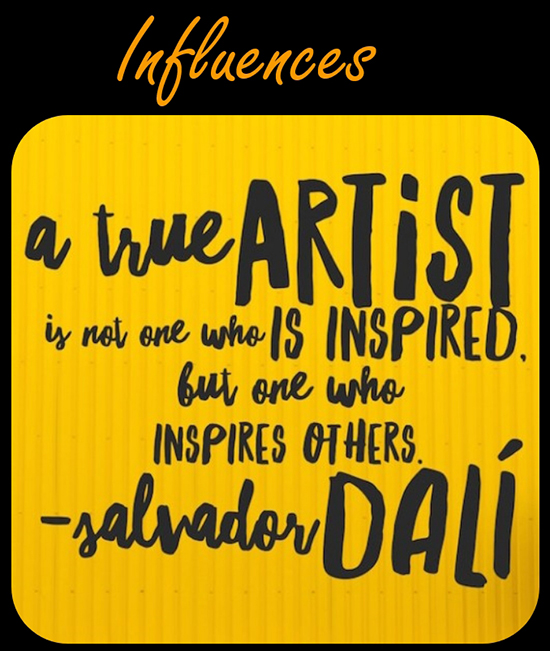
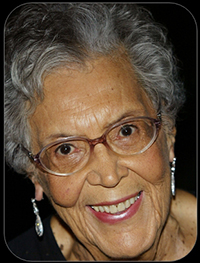
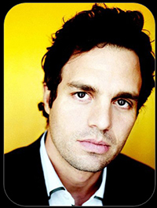
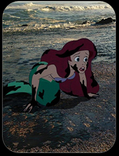

Salvador Dali's words still ring true today. Art is a vital tool to promote, educate, and inspire others not only to create but to envoke change. Art can penetrate language and cultural barriers, it can communicate ideas or beliefs that words fail to express, and can change perpectives and bring awareness to the issues that plague our world. There are many forms of art and many art activists using their talent, creativity, and/or platform to make a difference.

Elizabeth Catlett Mora
Teacher & Artist
Known for her art and sculptures of the depictions of Black-American citizens, mostly focused on women, and their experience in the 20th century.

Mark Ruffalo
Actor & Producer
Known for his role in the Marvel films as Bruce Banner / The Hulk. Ruffalo is an activist for renewable energy and organizations that support this cause such as the
Solutions Project

Jeff Hong
Artist & Animator
Jeff Hong is Disney animator who worked in creating movies like Mulan, Tarzan and Hercules. He is also an activist, his work "Unhappily Ever After" incorporates Disney characters to communicate important issues.